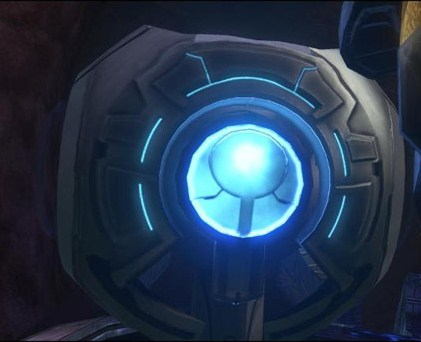
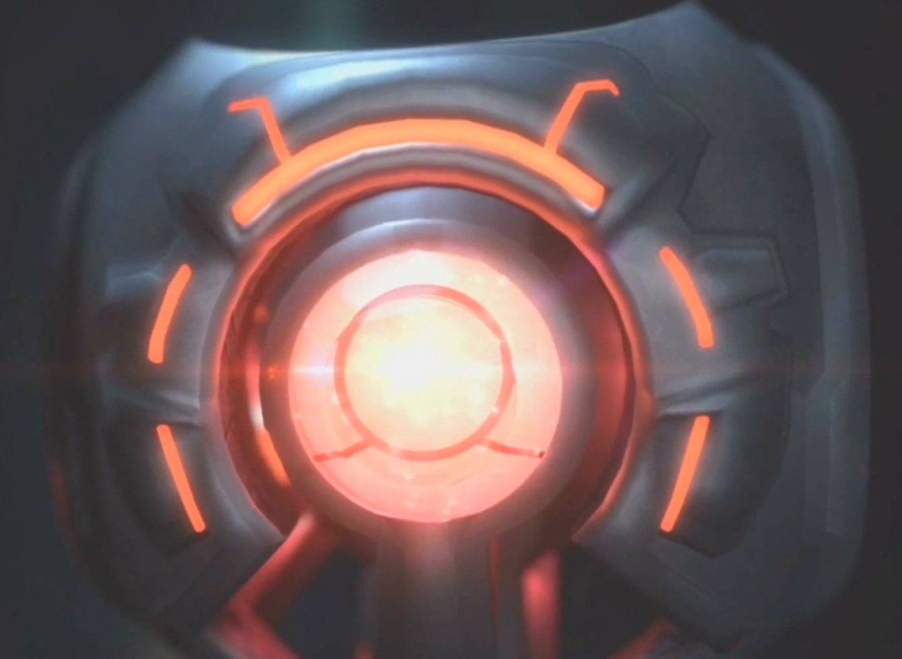

Monitor
Jede Installation beziehungs weiße jede Einrichtung hat einen sog. Monitor. Dieser ist eine Künstliche intelligienz der die Einrichtung steuert. Gebaut wurden sie von den Blutsvätern. Ähnlich wie wie die Huragoks hallten sie sich an Protokolle. Allerdings können sie eine eigene Meinung haben. Sie werden auch manchmal als Illuminaten bezeichnet.


Quellen und weiter Informationen
Montior, Halo wikia